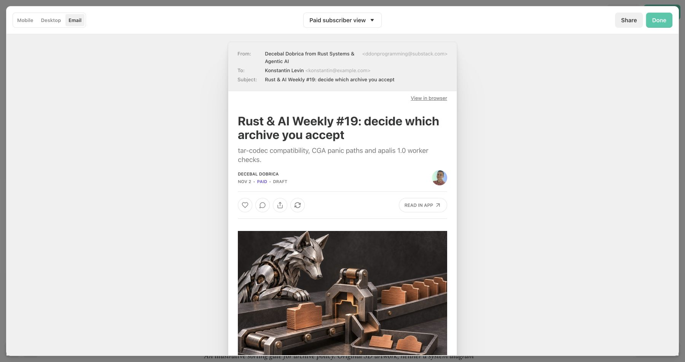

Issue 19 gives archive acceptance a test before migration
A reader can find the proposed archive corpus check directly after the sourced case, review independent verdicts and scan separate release/status details in the saved newsletter draft.
Action precedes adoption detail in the revised copy
Baseline experiment commit a591f8459ec4ec70b23b368218f80db102205e1a placed the action after uv adoption detail. Structural commit 17ca842e800cf157d59e4495507c7d6329829c33 moves it earlier. Manual corrections are separately identified by final article SHA-256 9d772438cf83cdbbad3c3ff05afc3763247eb844da2d6854a5ee90187a020979; the structural commit is not the exact final artifact.
Saved Substack preview shows the final issue

Reproduce the exact applied-copy check
- From the portfolio checkout, run:
node docs/social/assets/weekly19-report-learning/verify-applied.mjs
Pass: recorded hashes match, evidence gates pass and exports synchronize.
- Open the dated article route on the site and find the corpus action and final invitation.
Pass: both appear, release details render as lists and both edition images load.
A better proxy score does not establish reach
The structural proxy moved from 246 to 109; manual corrections produce 111. The evidence-loss control was rejected. These are document-position measurements, not reader or model-behaviour results. A paid preview does not establish a public audience setting.
Rendered checks establish readable saved content
The saved publisher body matches final HTML after normalization. The actual Next.js route returned HTTP 200 November 3 with the final text and images; mobile viewport and scroll width both measured 390. Lists and paragraph gaps are visible in native email preview.
What I have not checked
No delivered-mailbox test, benchmark reproduction, newsletter outcome, social reach lift or conversion lift. Deployment and publication receipts belong in the launch ledger once completed. Source checks and experiment limits remain in launch notes and report-learning evidence.